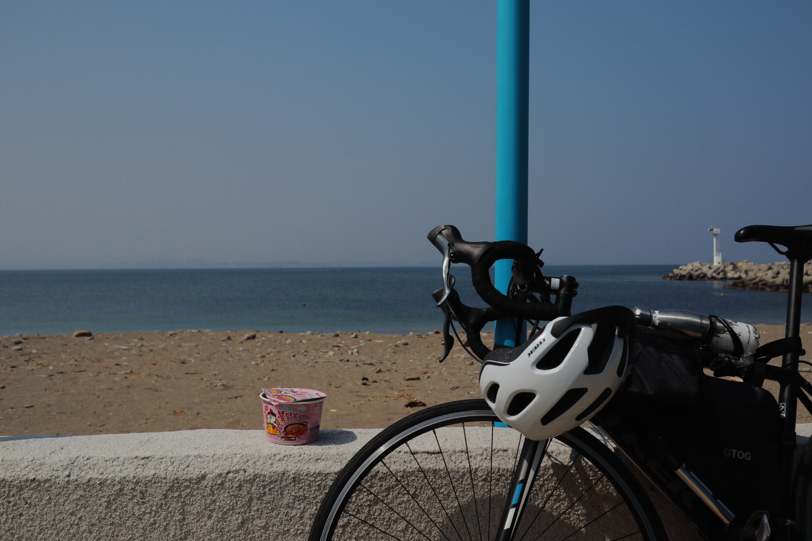
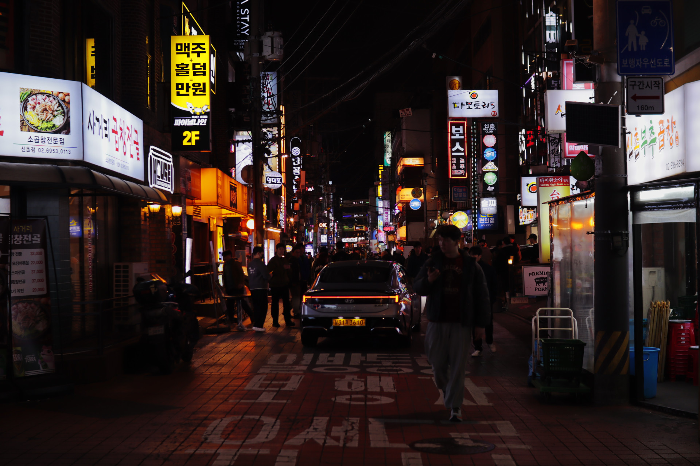
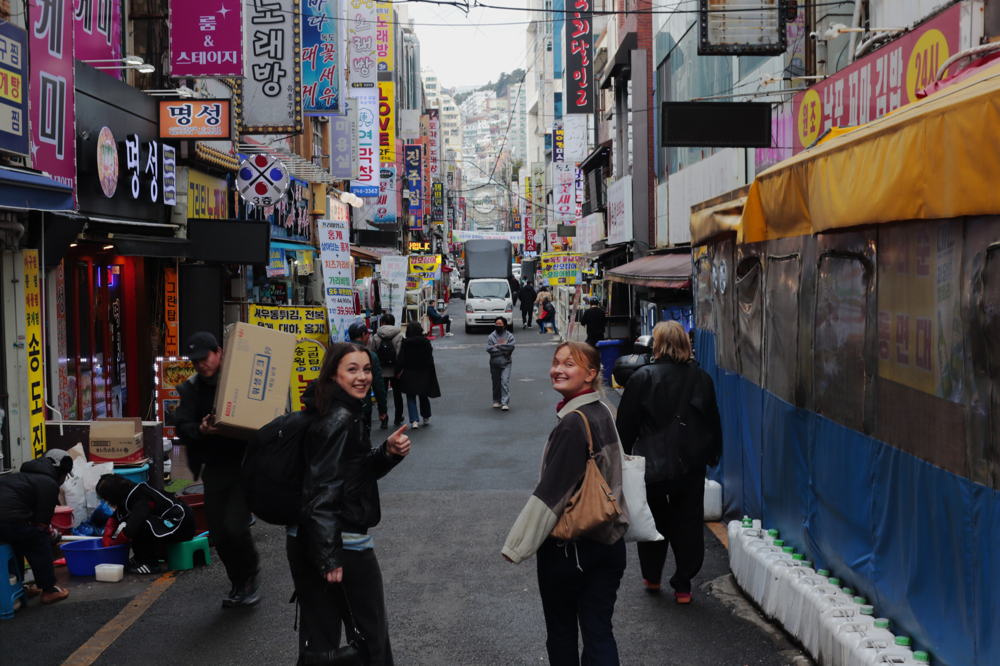
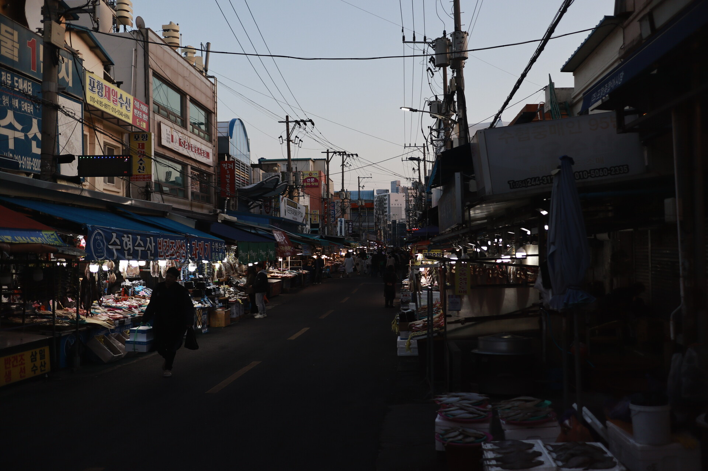

The (pretty) big biking post
Hey so I actually wrote all this up two weeks ago but never came around to finish it. I am currently in my midterm period, so time is in fact not the most plentiful. Even though everyone says that you will litteraly pass by just…
Continue reading...
Me getting into routine but the routine is just extremely chill and it's just fantastic
Whats up yall this is probably the longest streak I have ever consistently updated the blog ever! Huge celebration inbound for this one Anyways, last week has been pretty good. Classes are still somewhat boring and just full of repetition, but I hope that starting…
Continue reading...
Second Days in Korea
Whats up team it has now been almost four weeks since I landed here and I have been settling in and everything. My courses are starting to move past repetition, I went on a trip to Busan, and I have bought a bike. Many a…
Continue reading...
First Days in Korea
Man this place is so cool and theres just so many things to explore and everything and its so cool and i love it and yeah Theres so much to write about and stuff but basically everything is off to a really good start I…
Continue reading...